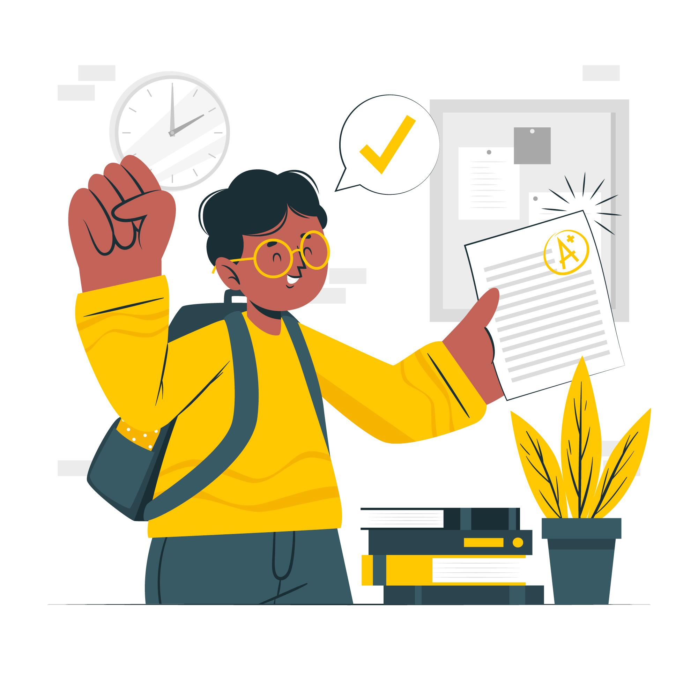

Inscrição no site oficial, execução do teste de lóogica, curso de trilha zero e montagem do
pitcth

Fig.1 - Ato da inscrição.
Segunda
Testes trilha zero e entrevista com recrutador para avaliação de bolsa,
nesta fase se analisa a elegibilidade para a bolsa de estudos perante os clientes e o candidato
Fig.2 - Testes de lógica.
Terceira
Dinâmina em grupo com realização de teste online e convocação dos alunos aprovados.